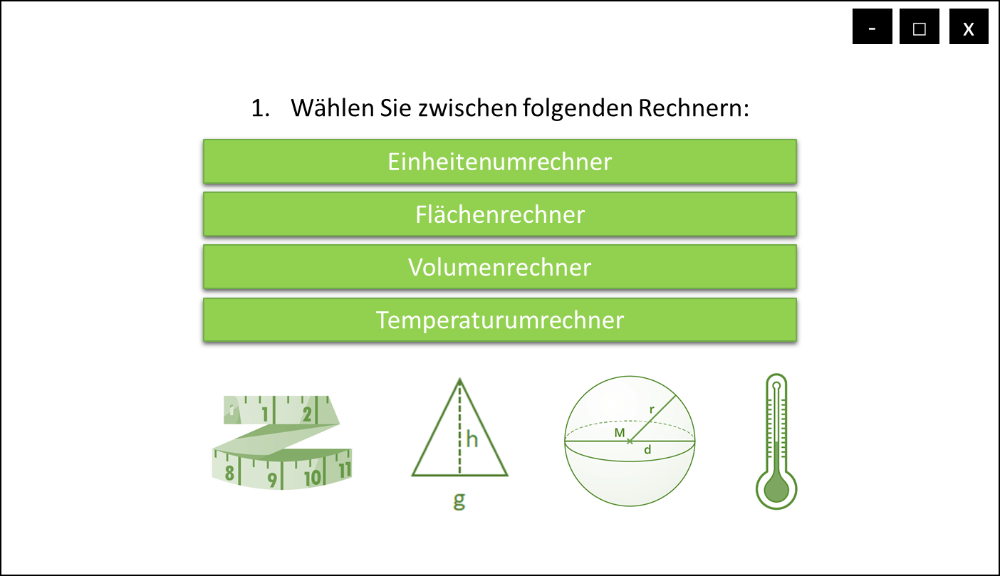

Projekt: (Um-)Rechnungstool
Semester: SS 2022
Teammitglieder:
- Beatriz Aiza Rocha (beatriz.rocha@hs-furtwangen.de)
- Jasmin Binkowski (jasmin.helene.binkowski@hs-furtwangen.de)
- Sophia Hug (sophia.hug@hs-furtwangen.de)
- Luca Wieland (luca.leon.wieland@hs-furtwangen.de)
- Leon Welker (leon.tenzin.welker@hs-furtwangen.de)
1. Projekt-Beschreibung
Das Projekt bietet dem Anwender vielfältige
Möglichkeiten zur einfachen Umrechnung verschiedener Einheit
und Berechnung von geometrischen und mathematischen
Größen und Formen.
Dabei wird man über ein simples Auswahlsystem auf dem
Bildschirm
zum gewünschten Umrechnungsfenster navigiert indem man die
Umrechnung durchführen kann.
2. Features und Anforderungen
Die Aufgabe des (Um-)Rechnungstools ist es den Anwender schnell und
einfach durch einen Pool an Um- und Berechnungsmöglichkeiten
zum
gewünschten Fenster zu navigieren, um so gezielt die
Lösung
von mathematischen und geometrischen Problemen zu ermöglichen.
Folgende Dienste sollen dabei zum Angebot stehen:
- allgemeiner Einheitenumrechner
- Flächenberechnung von zweidimensionalen
geometrischen Formen
- Volumenberechnung von dreidimensionalen geometrischen Formen
- Temperatur Umrechnung zwischen Celsius, Kelvin und
Fahrenheit
Die Eingangsdaten sind im allgemeinen die Größe der
Einheit
und die
Dimension. Sie können aber variieren jenachdem welches
(Um-)Rechnungsfenster geöffnet ist. So können beim
"1.
allgemeinen Einheitenumrechner" in einem Textfeld auf der linken Seite
des Fensters der Eingabewert eingegeben werden und über eine
dazugehörige Dropdown-Liste die entsprechende Einheit
ausgewählt werden. In einer weiteren Dropdown-Liste auf der
Ausgabeseite rechts kann nun die Zieleinheit ausgewählt
werden.
Anschießend kann die Umrechnung mit einem mittig gelegenen
Button
ausgeführt werden. Das Ergebnis ist dann im Ausgabefenster auf
der
rechten Seite zu sehen.
Die Oberfläche zur Flächen-und Volumenberechnung
bietet in
einer Dropdown-Liste zuerst die Auswahlmöglichkeit einer
gewünschten geometrischen Fläche bzw. Form. Davon
abhängig sind verschiedene Textfelder zur Eingabe der
gegebenen
Werte (z.B. Höhe, Breite, Länge, Radius, Durchmesser)
verfügbar. Im Programm werden diese mit der entsprechenden
Formel
berechnet und das Ergebnis wie oben beschrieben dann
einheitenspezifisch im Ausgabefeld dargestellt.
Bei unzulässigen oder keinen Eingaben, soll das Programm
folgendermaßen reagieren:
Wird eine gewisse Größe einer Zahl
unter- oder überschritten,
wird der errechnete Wert zur Übersicht mit einer 10er Potenz
versehen (Z.B 0,1
Fuß = 3,048*10^-5 km). Sollte keine Einheit bei der Ein- oder
Ausgabe ausgewählt oder kein Eingabewert eingegeben werden, so
wird eine Fehlermeldung mit einem Hinweis beim Drücken des
"Berechne"-Buttons ausgegeben.
Die Bedieneroberfläche soll im Sinne eines allgemeinen
Übersetzungstools als grafische Benutzeroberfläche
(GUI) aufgebaut
sein. Der Nutzer kann von einem
Startfenster einen der oben beschriebenen Rechner auswahlen. Dies
führt zur Weiterleitung zum entsprechenden Fenster mit oben
beschriebenen Dropdown-Fenstern, Eingabefeldern und einem
"Berechne"-Button, der zur Ausgabe des Ergebnisses führt.
Zusätzlich
wird der Nutzer textuell durch eine Schritt für
Schritt-Anleitung durch
jedes Fenster geleitet.
Startfenster zum Wählen des Rechners:

Beispielfenster zu den einzelnen Rechnern:
Der Quellcode wird über die Entwicklungsumgebung Eclipse
mittels der
Programmiersprache
Java geschrieben. Eventuell kommt das Programm BlueJ zur
Fehlererkennung zum
Einsatz.
3. Architektur
TODO: Beschreibung der Software-Architektur inkl.
Klassendiagramm z. B.:
Das Klassendiagramm kann mit Hilfe von Pseudo Code (siehe HTML
Quelltext) erstellt werden (Hilfe).
classDiagram
class Startbildschirm {
interface button einheit(1)
interface button volumen(2)
interface button fläche(3)
interface button temperatur(4)
gehezu1()
gehezu2()
gehezu3()
gehezu4()
}
class Einheiten {
double einheit
berechne()
getLänge()
setLänge()
ausgabe()
}
class Volumen {
double volumen
berechne()
getVolumen()
setvolumen()
ausgabe()
}
class Fläche {
double fläche
double Grundseite
double hohe
berechne()
getFläche()
setFläche()
ausgabe()
}
class Temperatur {
double temperatur
berechne()
getGewicht()
setGewicht()
ausgabe()
}
class Temperatur {
double Temperatur
berechne()
getTemeperatur()
setTemperatur()
ausgabe()
}
class Länge {
double einheit
berechne()
getLänge()
setLänge()
ausgabe()
}
class Kapazität {
double kapazität
berechne()
getVoloumen()
setvoloumen()
ausgabe()
}
class Areal {
double areal
double Grundseite
double hohe
berechne()
getFläche()
setFläche()
ausgabe()
}
class Gewicht {
double gewicht
berechne()
getGewicht()
setGewicht()
ausgabe()
}
class Geschwindigkeit {
double Geschwindigkeit
berechne()
getTemeperatur()
setTemperatur()
ausgabe()
}
Einheiten <|-- Länge
Einheiten <|-- Kapazität
Einheiten <|-- Fläche
Einheiten <|-- Gewicht
Startbildschirm <|-- Einheiten
Startbildschirm <|-- Voloumen
Startbildschirm <|-- Areal
Startbildschirm <|-- Gewicht
class Viereck {
double längeA
double längeB
berechne()
ausgabe()
}
class Kreis {
double radius
berechne()
ausgabe()
}
class Dreieck {
double grundseite
double hoehe
berechne()
ausgabe()
}
Fläche <|-- Viereck
Fläche <|-- Kreis
Fläche <|-- Dreieck
class Würfel {
double länge
double breite
berechne()
ausgabe()
}
class Kugel {
double radius
berechne()
ausgabe()
}
class Pyramid {
double grundseite
double hoehe
berechne()
ausgabe()
}
Volumen <|-- Würfel
Volumen <|-- Kugel
Volumen <|-- Pyramid
4. Aufwandsschätzung und Aufteilung
TODO: Schätzen Sie den Aufwand der verschiedenen
Teile Ihres
Programms ab und legen Sie fest, wie die Aufteilung auf die
Gruppenmitglieder aussehen soll.
Optional: Verweis auf andere HTML Dateien
Eine weitere HTML-Datei